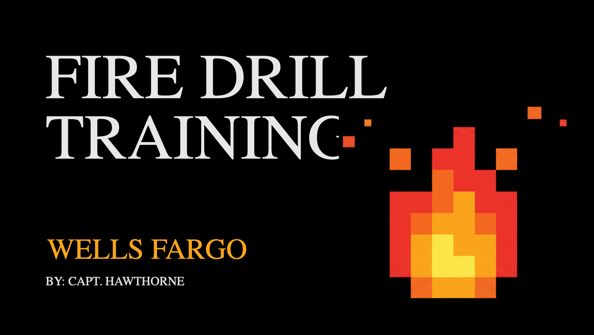
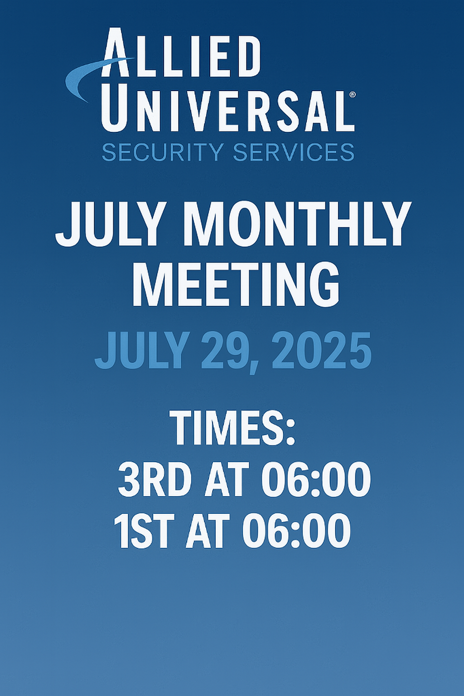

Client Communication
Clear updates, polished documentation, and responsive follow-through for leadership and client stakeholders.
Security Operations Portfolio
Tyrese Hawthorne brings a field-tested approach to account management, physical security operations, client communication, staffing coordination, incident response, and internal workflow development.

Operational Profile
About
Tyrese Hawthorne is a security operations professional focused on keeping high-traffic environments organized, protected, and professionally represented. His work combines account management, supervisor communication, team alignment, incident awareness, and practical process improvement.
This portfolio is designed for recruiters, clients, and leadership teams who need to see more than a job title. It highlights how Tyrese approaches daily coverage, client expectations, officer readiness, site communication, and the internal tools that help a security operation run with consistency.
Core Strengths
Clear updates, polished documentation, and responsive follow-through for leadership and client stakeholders.
Post coverage, officer readiness, access control awareness, patrol flow, and site-level accountability.
Structured response, escalation judgment, report quality, and calm coordination during active situations.
Shift planning, coverage visibility, rotation tracking, and practical staffing communication for daily operations.
Checklist-driven reviews, compliance awareness, post inspections, and operational readiness improvements.
Practical use of AI-assisted drafting, data organization, and internal tool concepts to reduce administrative drag.
Experience Highlights
Balanced day-to-day coverage needs with professional reporting, meeting preparation, and team alignment.
Created consistent communication around current issues, site updates, hiring needs, and shift readiness.
Focused on practical tools that help officers and supervisors understand where to be, what changed, and what needs attention.
Projects
Interactive post visibility for daily officer movement, rotation assignments, and coverage clarity.
Placeholder for final screenshot or live internal demo.
Scheduling support for organizing officer shifts, improving visibility, and reducing staffing confusion.
Placeholder for final screenshot or sanitized project walkthrough.

Professional training content for emergency readiness, officer awareness, and response consistency.

Structured updates that keep teams aligned on site issues, client needs, and backend operational changes.
Professional Writing
Placeholder for a leadership-ready monthly recap covering incidents, staffing, training, risks, and next actions.
Placeholder for polished incident documentation that separates facts, actions taken, escalation, and follow-up.
Placeholder for audit notes, post condition reviews, officer performance observations, and corrective actions.
Certifications
Replace or add certification files in the assets folder as new credentials are earned. This first version includes the available CPR certification preview.

Available credential preview with the full PDF linked for review.
View PDFAdd license details, expiration date, and a PDF or image preview when available.
Add future credentials such as emergency response, de-escalation, OSHA, FEMA, or site-specific training.
Resume
Add the final resume PDF to portfolio-site/assets/tyrese-hawthorne-resume.pdf and this button will
be ready for recruiters, clients, and hiring teams.
Contact
Replace the placeholder email and LinkedIn URL with final contact details before publishing the site.